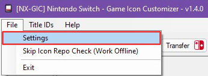

NX Titles List Dumper
are you getting Errors importing titles.csv? lets see if we can fix that.
In NX-GIC go to File > Settings

if you have something in the Installed Titles List (CSV) path click Delete.
then click SAVE
Possible Bug
I recommend closing nx-gic and reopening it, this seems to be better at refreshing the changes made I'm not sure if this is a database issue or how nxgic saves changes made to the program

If you have followed by guide you should have titles.csv in the same folder as nx-gic copy the path Ctrl+C

once again open NX-GIC go to File > Settings
and paste Ctrl+V the nx-gic location we have just copied into Installed Titles List (CSV)
Possible Bug
I recommend closing nx-gic and reopening it, this seems to be better at refreshing the changes made I'm not sure if this is a database issue or how nxgic saves changes made to the program

To Reload titles.csv Click on Auto GIC Hit Ok and locate the titles.csv file
click open and titles installed should work correctly

Possible Bug
I've noticed errors where nx-gic fails to load the csv correctly and can possibly delete the CSV file from your system so either have a backup or recopy the file from your SD card.